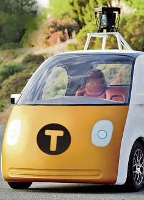
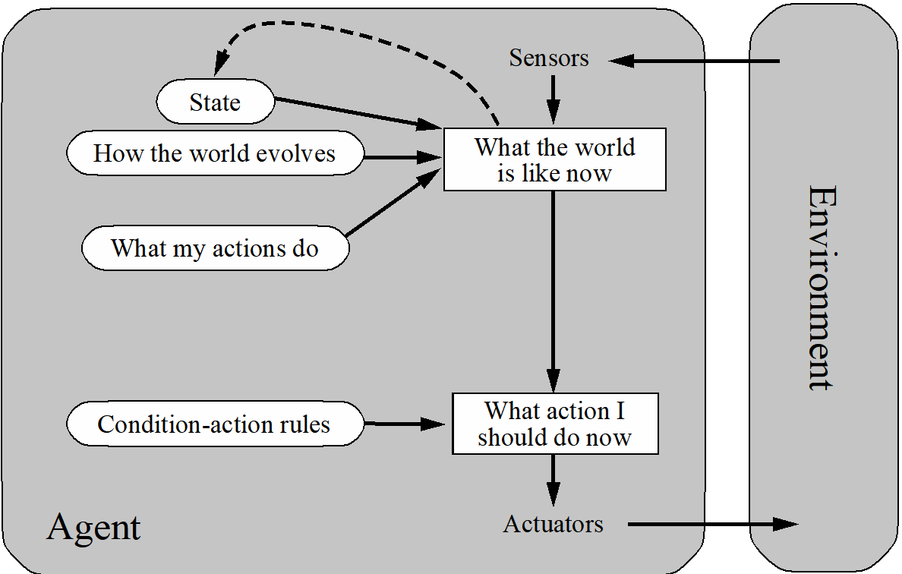

智能体与环境

- 智能体通过感知器感知环境，并且通过执行器做出反应
- 人类是智能体吗？
- 珍计算器是智能体吗？
- 人工智能更聚焦于具有大型计算资源的智能体和需要非平凡决策的环境
理性
- 理性智能体 无所不能？
- 理性智能体 洞察一切？
- 理性智能体是否 探索 和 学习？
- 理性智能体是否会犯错？
- 理性智能体 是否自主 (即超越初始程序)？
PEAS
- P: 性能度量 Performance measure
- E: 环境 Environment
- A: 执行器 Actuators
- S: 感知器 Actuators
Pacman游戏中的人类智能体
任务环境 – PEAS描述
- 性能度量（P）
- 环境（E）
- 执行器（A）
- 感知器（S）
-1 每步移动; + 10 食物; +500 胜; -500 败; +200 击中受惊吓的幽灵
Pacman 动态变化，包括幽灵的行为
上下左右-动作
整个状态都是可见的，除了能量丸存续时长
PEAS: 自动驾驶出租车 
- 性能度量
- 环境
- 执行器
- 感知器
收入，车辆成本，顾客满意度，罚款，保费
街道，顾客，驾驶员，天气，警察
方向盘，刹车，油门，显示屏
相机，雷达，话筒，GPS
PEAS: 医疗诊断系统
- 性能度量
- 环境
- 执行器
- 感知器

病人健康状况，开销，口碑
病人，医护，保险公司，法院
屏幕显示、发送邮件
键盘、鼠标
环境类型
智能体类型
智能体设计
环境类型很大程度上决定智能体设计
- 部分可观察 => 智能体需要内存
- 随机 => 智能体需要为突发情况做好准备
- 多智能体 => 竞争 或 合作
- 静态 => 智能体有时间计算出一个理性决策
- 连续 => 连续运行的控制器
- 未知 => 需要探索
- 未知性能度量 => 观察/按人类原则互动
智能体类型
按照递增的通用性和复杂性排序
- Simple reflex agents （单反射性智能主体）
- Model-based reflex agents（基于模型的反射性智能主体） 
- Goal-based agents （基于目标的智能主体）
- Utility-based agents （基于效用的智能主体）


总结
- 智能体通过感知器和执行器与环境交互
- 智能体函数由运行在机器上的智能体程序实现，描述了智能体在环境中的行为
- 理性智能体选择最大化期望效应的行动
- PEAS描述定义任务环境；精确的PEAS规范至关重要并强烈影响智能体设计
- 更复杂的环境需要更复杂的智能体设计和更复杂的表示